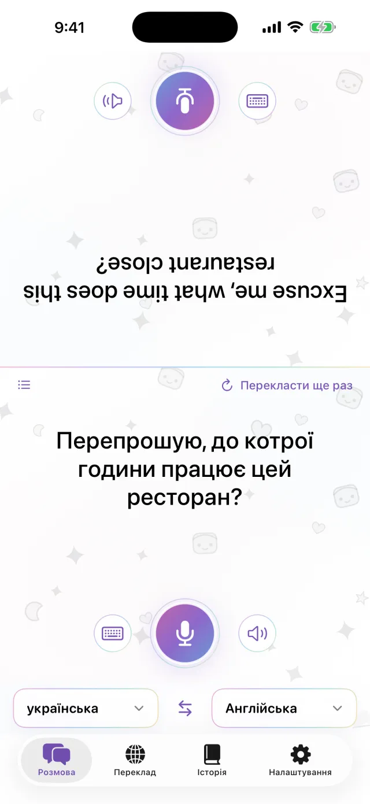
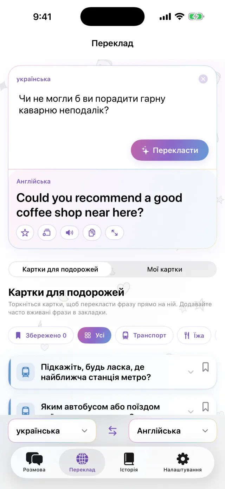
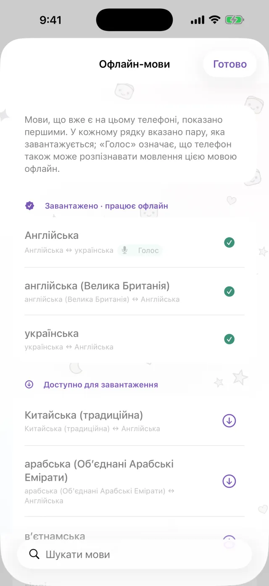
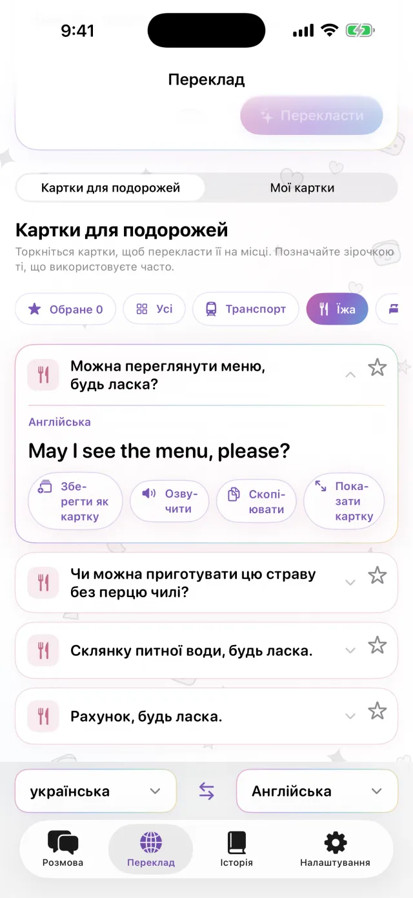
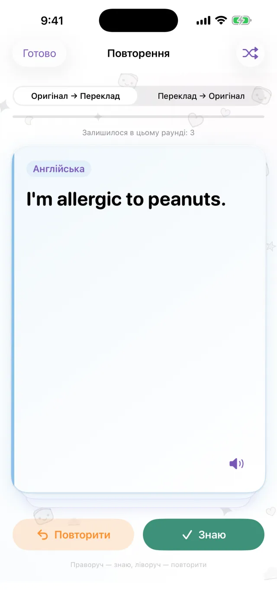

Перекладач для iPhone
Перекладач для iPhone
Покладіть iPhone
між вами.
Це все.
Натисніть мікрофон і говоріть. Переклад з’явиться на другій половині екрана, обернений до співрозмовника. Коли він відповідає, усе відбувається так само. Завантажте мови заздалегідь, і застосунок працюватиме без підключення до інтернету.
Незабаром в App Store- Близько 20 мов
- Офлайн після завантаження
- Без реєстрації

Введення тексту
Не можете говорити вголос? Наберіть текст.
У тихому місці або коли співрозмовник говорить надто швидко, просто наберіть фразу. Переклад можна розгорнути на весь екран і показати співрозмовнику.
- Можна скопіювати або озвучити
- Дві мови міняються місцями одним дотиком

Офлайн
Без інтернету переклад працює
Переклад, розпізнавання мовлення й озвучення працюють на самому iPhone. Завантажте потрібні мови перед поїздкою, і застосунок працюватиме в літаку або до того, як ви купите SIM-карту. Сказане вами не надсилається на сервер, а записи не зберігаються.

Картки з фразами
Збережіть фрази, які кажете щоразу
Адреса готелю, алергія на їжу, станція, яку ви шукаєте. Збережіть їх як картки, і набирати знову не доведеться. Торкніться картки, і вона перекладеться мовою співрозмовника. Готові картки для транспорту, кафе й ресторанів, проживання та покупок уже є в застосунку.

Pro
Поверніться до того, що перекладали
Ваші переклади зберігаються за датою. З речень, які хочеться запам’ятати, можна зробити картки для повторення. Ця частина доступна в Pro.

Стане в пригоді, коли потрібно
- Зробити замовлення в маленькому ресторані
- Назвати адресу таксисту
- Пояснити в аптеці, що в вас алергія
- Залишити валізи на ресепшені готелю
- Запитати дорогу
Подивіться за 30 секунд
На цьому відео ввімкнено режим «У літаку».
Коротко
| Мови | Близько 20 (мови, які Apple перекладає на пристрої) |
|---|---|
| Офлайн | Так, після завантаження мов |
| Голосове введення | Так. Для деяких мов доступне лише введення тексту |
| Обліковий запис | Не потрібен |
| Ціна | Безкоштовно. Pro оплачується окремо (див. нижче) |
| Вимоги | iPhone з iOS 18 або новішою |
- Уперше потрібне підключення до інтернету, щоб завантажити мови.
- В App Store ціни показано у вашій місцевій валюті.
Безкоштовна версія та Pro
Безкоштовно
- Розмова віч-на-віч
- Введення тексту й показ на весь екран
- Офлайн-переклад
- Картки для подорожей і 3 власні картки
- Невеликий рекламний банер
Pro
- Без реклами
- Необмежена кількість карток
- Історія перекладів і картки для повторення
Тижнева або місячна підписка чи одноразова покупка.
Перед поїздкою завантажте мови.
Незабаром в App StoreiPhone · iOS 18 або новіша · Безкоштовне завантаження · Як працює кожен екран